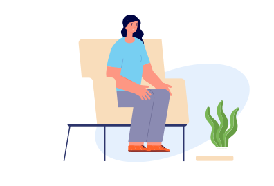

제목H3

스트레스
스트레스란, 외부로부터 주어지는 압력으로 인해 초래되는 심리적, 신체적 긴장상태를 말합니다. 스트레스에는 우리 몸에 도움을 주어 더 나은 상태를 유지하게 하는 좋은 스트레스(eustress), 우리 몸에 혼란을 야기하고 병들게 하는 나쁜 스트레스(distress)가 있습니다. 우리는 좋은 스트레스는 지속적으로 만들고, 나쁜 스트레스는 적극적으로 대처하여 스트레스를 변화와 성장의 기회로 삼아야 하겠습니다.
나의 스트레스 정도는?
각 항목을 잘 읽고 최근 나의 경험들을 떠올려 해당되는 칸을 클릭하세요.
| 그렇지 않다 | 가끔 그렇다 | 자주 그렇다 | |
|---|---|---|---|
| 1. 모든 일에 집중할 수가 없다. |
|
|
|
| 2. 불면증에 시달린다 |
|
|
|
| 3. 사소한 일에 매우 신경질적이 되었다. |
|
|
|
| 4. 두통이나 소화불량을 자주 경험한다. |
|
|
|
| 5. 이상과 현실간의 격차 때문에 갈등을 경험한다. |
|
|
|
| 6. 부모님과 의견충돌이 잦다. |
|
|
|
| 7. 진로나 취업에 필요한 적성을 알 수가 없어서 고민한다. |
|
|
|
| 8. 시험이나 과제가 있을 때 어디서부터 시작할지 몰랐다. |
|
|
|
| 9. 용돈이 부족해서 하고 싶은 일을 못한 적이 있다. |
|
|
|
| 10. 마음이 맞는 친구를 사귈 수 없었다. |
|
|
|
스트레스 줄이기
1. 생각바꾸기로 스트레스 줄이기
- 긍정적인 생각이 나를 성장하게 한다.
- 어려운 문제에 부딪혔을 때 오히려 이를 자기에게 주어진 좋은 기회로 바꾸어 자신을 성장시킬 수 있다.
Tip 이 일을 내가 할 수 있을까? → 해보지 않고 어떻게 알아? → 한번 해보자! 내게 좋은 기회가 될거야!
2. 비현실적인 기대는 좌절감만 안겨준다.
- 현실과 욕구 사이의 차이가 크면 실망감과 좌절감을 낳게 된다. 나의 기대감이 비현실적이라면 현실적으로 수정하여 성취감을 맛보자.
ex1) 현실적인 노력이 더 중요한데, 어학연수만 다녀오면 외국어를 잘 할 것으로 기대하는 경우
ex2) 자기관리가 더 중요한데도, 아무런 변화 없이 백마 탄 왕자나 평강공주를 기대하는 경우
3. 마음을 열어 고정관념을 깨자.
- 우리는 습관화되어 익숙해진 것은 맞는 것이고, 어색한 것은 틀린 것이라는 생각을 가지고 있다. 그 고정된 관념을 유지하려고 거치지 않아도 되는 절차를 지키는데 노력을 기울이거나, 다른 사람의 고정관념과 갈등을 일으켜 스트레스를 받게 된다.
감정표현으로 나를 표현하고 스트레스 줄이기
1. 신뢰 할 수 있는 친구나 가족과의 대화를 통해 걱정거리를 털어 놓자.
2. 글로 감정을 표현하자.
- 화가 났을 때 화를 나게 한 사람에게 편지를 써본다. 물론 보내지 않으며, 한번 쓴 후 다 시 읽지 말고 없애버린다. 다시 보게 되면 화났던 감정이 되살아 날것이다.
3. 유머를 통해 많이 웃자.
- 웃음은 긴장을 완화시켜 주는 훌륭한 스트레스 억제제이다.
생활습관으로 스트레스 줄이기
1. 다양한 식품을 골고루 먹자.
2. 술, 담배, 카페인 음료를 절제하자.
3. 유산소 운동을 한번에 30분씩 일주일에 3회 이상 규칙적으로 운동하자.
4. 기상시간을 일정하게 유지하고, 낮에 활발하게 활동하자.
5. 여러 가지 이완법을 사용하여 긴장상태를 완화하자
- 근육이완 : 호흡을 통제하고 근육을 이완시켜 긴장 완화
- 요가 : 신체, 마음, 그리고 감정을 이완
- 목욕 : 심한 근육의 긴장을 이완
- 취미생활 : 자신의 욕구에 맞는 여가활동